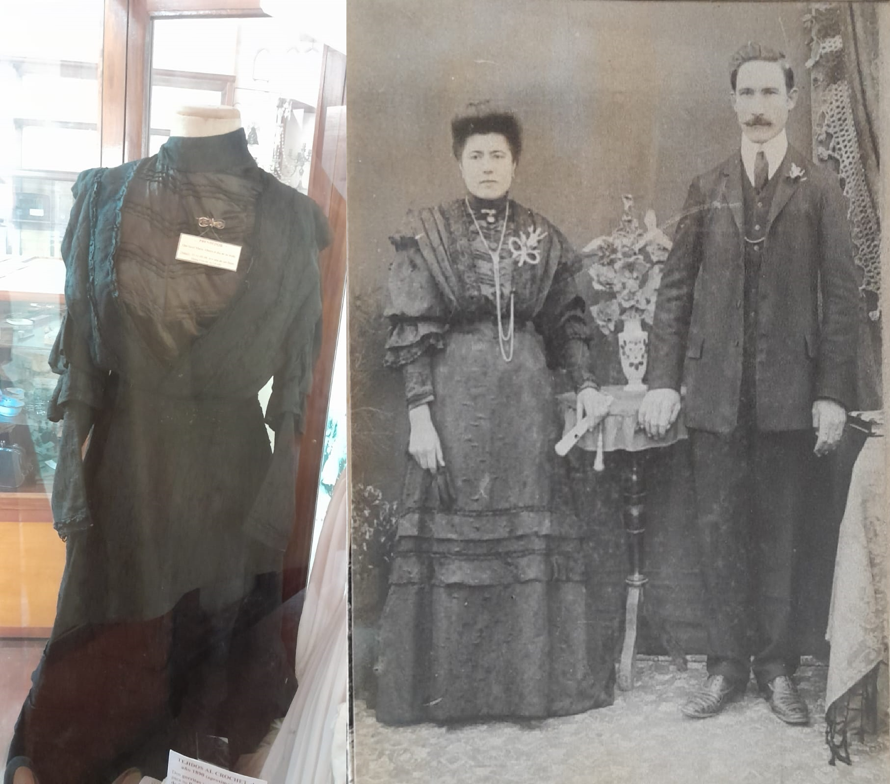

El Museo Histórico Regional de San Agustín tiene origen en el amor a “la Historia” que supieron
transmitir dos abuelos, Luisa Periotti y Juan (Giovannin) Beltramino, a sus cuatro nietas, Aurora,
Gloria, Norma y Amelia. Los abuelos, hijos de inmigrantes italianos, siempre relataban a las niñas
hechos ocurridos durante la época de la colonización, de los cuales ellos habían sido protagonistas. De
este modo, inculcaron a la nieta mayor, Aurora, el resguardo de los objetos antiguos entregados como
reliquias por sus parientes inmigrantes, en su mayoría piamonteses.
A medida que transcurría el tiempo se fueron interesando en la tarea las tres hermanas menores, su
esposo y luego toda la familia. Hoy en día es una pasión que los reúne y desde entonces trabajan por
este objetivo común.
El Museo se inauguró el 15 de diciembre de 1990, con el apoyo de las autoridades provinciales y un grupo
de entusiastas colaboradores.
A partir de entonces funcionó de forma ininterrumpida en el salón que fuera parte del Molino Harinero de
Michele Taverna (circa 1867). Durante estos años, su patrimonio fue enriqueciéndose con donaciones de
antiguos pobladores, que tuvieron la generosidad de desprenderse de sus elementos de valor afectivo para
brindarlos a esta causa común.
Nuestra colección
La colección del Museo Histórico Regional de San Agustín preserva la memoria de los asentamientos
anteriores a la fundación de la época de la colonia, cuando
estas tierras recibían el nombre de “Campo Malaquías” (1755), y a la época de la inmigración. Su misión
es rescatar la herencia tangible e intangible de nuestros antepasados para difundirla por los distintos
medios, con el fin de fortalecer la identidad sanagustinense.
Nuestro inventario consiste en un registro detallado y organizado
que agrupa los elementos del patrimonio según su temática y fechas, además de incluir una valoración
como objetos históricos. Inicialmente, este inventario se elaboraba en formato físico (papel), pero
ahora se gestiona mediante bases de datos, como ser Excel.
Cada elemento del inventario se documenta de manera exhaustiva a través de una ficha descriptiva que
incluye información clave:
Nombre y descripción del objeto
Función y año
Nombre del donante
Este sistema permite garantizar un control eficiente y una mejor comprensión del valor histórico y
cultural de los elementos que forman parte del patrimonio del museo.
Los objetos se agrupan por áreas temáticas:
Pueblos Originarios
Punta de lanza. Encontrada en el tronco de un árbol en las
inmediaciones del fortín “El Tala”.Donación: Alfredo (Alfredito) Erni.Piedras de boleadoras. Encontrada cerca de la Estación de San
Agustín en el campo de Masino, a 50cm de profundidad, en julio de 1997.Donación: Ramón
Díaz
Fortín "El Tala"
Herraje de la puerta de la comandancia; bala de cañón; piedras de boleadora;
hebillas
de cintos; botones de metal para chaquetas (el primero tiene la inscripción en inglés
"WARRANTED SUPERIOR") y el resto son botones comunes; vainas de balas de armas de fuego y
cuentas de metal.
Mapas de nuestra región
Primeros pobladores
Objetos domésticos
Reloj. Despertador con dos campanillas, a cuerda del año 1934.
Perteneció a Juan Bautista Chiaro y flia. Donación: Néstor Chiaro.
Herramientas
Arado mancera. De hierro, con una reja, con dos manijas. Se
utilizaba
para arar, tirar por un caballo o buey.Donación: Familia José Periolo y Amalia Dessa de
los primeros colonizadores de San Agustín.
Herrería
Enseres de comercio
Fiambrera para guardar quesos.Donación: Juan Bassi.
Educación
Escuela N°353 "Domingo F. Sarmiento" (año de creación 1885). Foto
tomada en 1923 probablemente el día de la inauguración del edificio. (Donada por Ibes
Galetto (1917 - 1993) y su esposa Blanca Violeta Rodriguez(1921 - 1994), entregada por
Violeta Galetto y su esposo Juan Carlos Bugnon - 2023).
Debido a la vasta extensión de la Colonia de San Agustín, funcionaron escuelas particulares
en los distintos "Parajes Rurales": "Bajo Las Tunas"; "Estación San Agustín"; "Campo
Periotti"; "Campo Peretti" y "Los Tres Reyes", que con el tiempo se transformaron en
Escuelas Fiscales dependientes del entonces Consejo General de Educación y se construyeron
locales escolares propios.
Documentos y Escritos
Factura de tienda. Del almacén de Antonio y Bautista Boero
sucesores de Carlos Boero (1882). Este local, años después perteneció a Samuel Nicollier y
Flia.Donación: Juan Bassi.
Deportes y Juegos
Juego de ajedrez de madera. Data aproximadamente de la década de
1940. Los Hnos. Favre concurrían a la ESC N°353 con varios equipos similares para enseñar a
los alumnos.Donación: Lola Bella de Favre.
Patrimonio eclesiástico
Arte funerario
Resto de lápida del Cementerio de San Jerónimo Norte perteneciente
a los esposos:
Juan José Albrecht: nació el 25/11/1854 en Goppisberg, Cantón de
Valais
(Suiza). Falleció el 14/11/1945 en San Jerónimo Norte.
María Lagger: nació el 31/05/1860, proveniente del mismo lugar que
su
esposo. Falleció el 20/08/1936 en San Jerónimo Norte.
Vestimenta

Vestido de novia. Utilizado por MARÍA ÁLBERA el 25/08/1908 en su
boda con JOSÉ ALFREDO PERIOTTI Donado por una de sus hijas: IRMA
PERIOTTI DE CANCLINI.
.png)